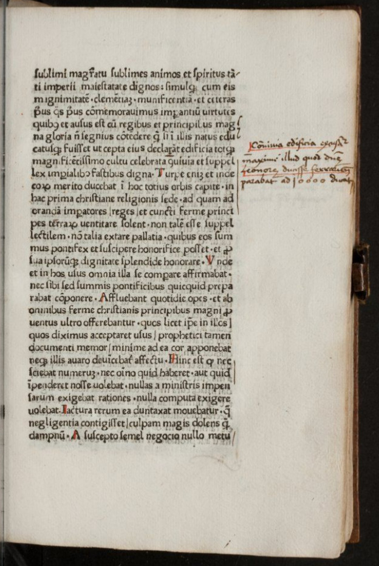

Address of this presentation: croala.ffzg.unizg.hr/sunoikisis/jovanovic-modruskiriario.html
Neven Jovanović / neven.jovanovic@ffzg.hr
University of Zagreb, Faculty of Humanities and Social Sciences
Department of Classical Philology
Life of Nicholas, bishop of Modruš
Who was Pietro Riario?
Nicolai episcopi Modrussiensis Oratio in funere
Editions of Nicholas' speech
Textual problems
Insights
Born in Kotor c. 1427. Studied in Venice (Scuola di Rialto) and probably Padua (by 1457 he is a doctor of theology and arts). Bishop in Senj (1457) and Modruš (1461). Legate of pope Pius II in Bosnia (1463) and at the court of Matthias Corvinus. Under pope Paul II (1464-1471), administrator in the Papal State, showing strong intellectual and humanist aspirations. In 1473, under Sixtus IV, tried to present himself as worthy of cardinalate (Špoljarić: "the first Illyrian cardinal"). In 1474, member of Pietro Riario's entourage. again the Pope's administrator (Spoleto, Perugia, mission to Florence). Died in 1480.
A nephew of Francesco della Rovere (future pope Sixtus IV). Riario was born in 1445, died in 1474. Burckhardt: "in splendour, lacking nothing that human intelligence can invent".
Riario's early death provoked a great number of texts, and much interest.
Niccolò Perotti spoke, Nicholas of Modruš published his speech and presented it to the Pope
duo nostra aetate principes eloquentiae
(Gio. Bat. de Giudici, bishop of Ventimiglia, in 1474).
Nicholas' speech was printed seven times 1474-1484
(after Nicholas' death, but still during Sixtus' pontificate!)
in Rome, Padua, and Rostock.
It also exists in seven manuscript copies.
The speech was a kind of propaganda for Sixtus IV.
The speaker starts from his own affliction, and from the other cardinals' and Pope's loss.
Then he illustrates the deceased's virtues through the story of his life, stressing his prodigal childhood (Riario predicted his uncle's papacy) and the (brief) cardinalate.
Nicholas defends Riario from the "wicked and envious tongues", demonstrating Riario's dedication to his duties and to his uncle, largesse to churches, love for his entourage.
Riario's death is described in detail (including the novissima verba), as a death of a holy man.
There are few direct Biblical quotations and even fewer classical ones.
The fifth edition (Rome: S. Plannck, 1482), preserved in the largest number of copies today, is also
(though the first, by R. de Vulterris, also shows considerable printer's errors).
More errors appear in the second half of the book.
The manuscript copies seem to have been done from the printed books (but a thorough examination is pending).
Omnium saluti die noctuque inseruiebat, et tamen a nonnullis negligentiae bacusabatur
minutus celesti viatico (for munitus)
multis mundanarum cupiditatum desideriis ingemuit
(for nullis)
nolens lubensque eius (i. e. Dei) praesto sum voluntati
(for uolens lubensque)
nunc in luxu ac inanibus (for manibus)
The first printed book by a Croatian author may perhaps look unimpressive today, but it was popular in its time.
This is confirmed by the number of reprints (and their preserved copies) and manuscripts.
It had a propagandistic function in Sixtus IV politics.
Its reception needs further research.
Results could be interesting, as it was one of the earliest funeral orations on the death of a cardinal, and it used the relatively new medium of print, enjoying considerable circulation.
